長期トレンド
JKMとJEPXシステムプライスの推移グラフ
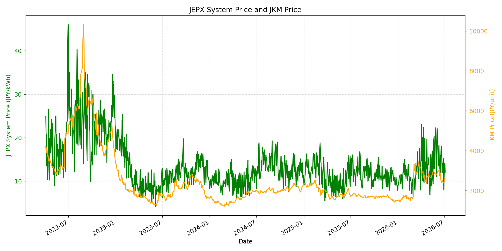
WTIの推移グラフ

JEPXエリアプライスグラフ（直近一年分）
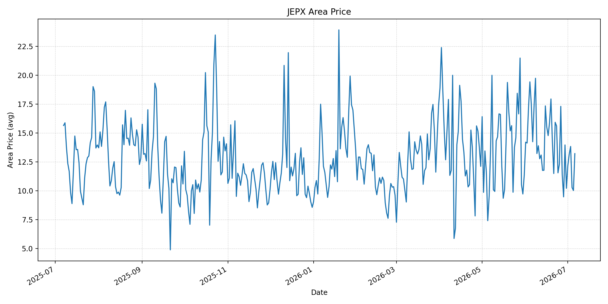
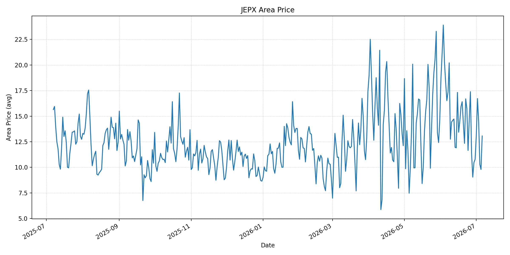
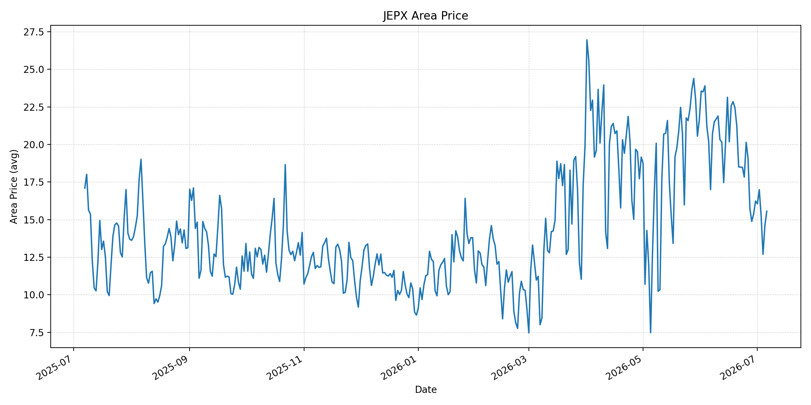
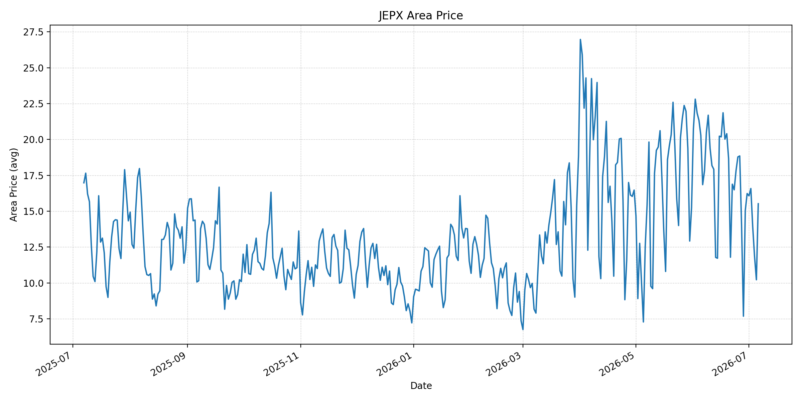
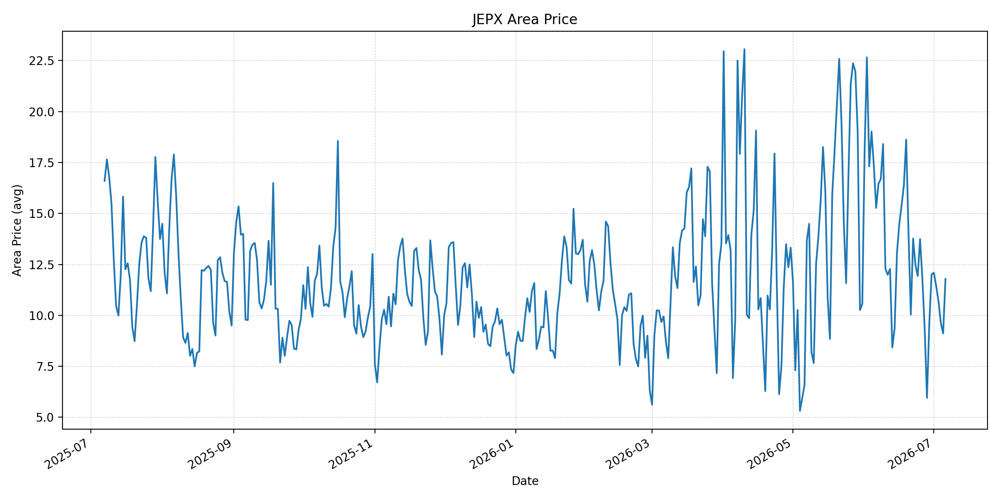
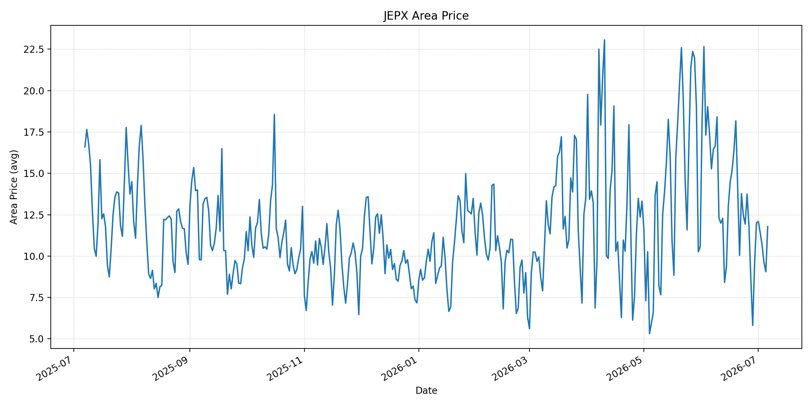
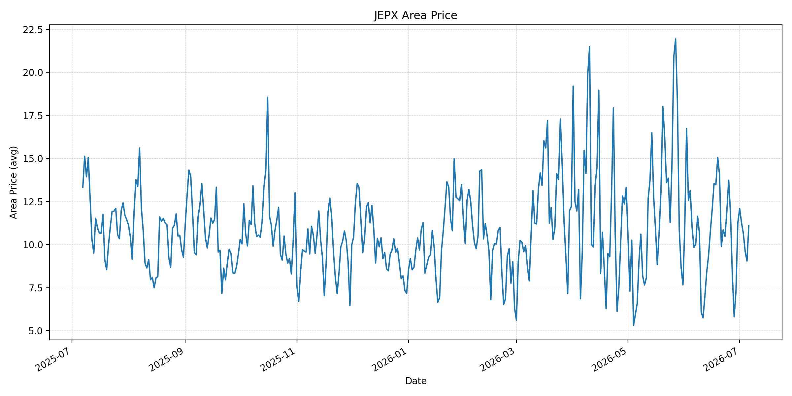
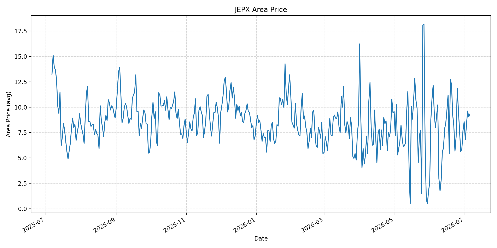
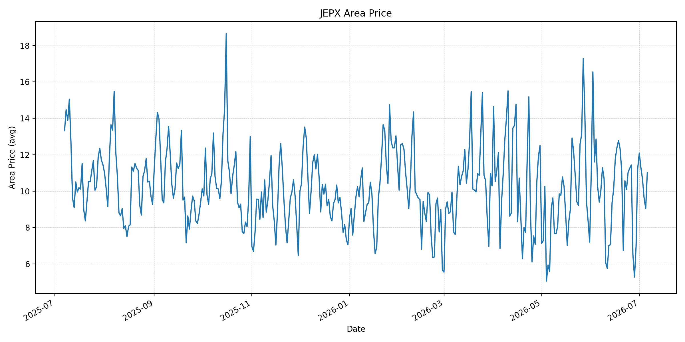
短期トレンド
JKMとJEPXシステムプライスの推移グラフ
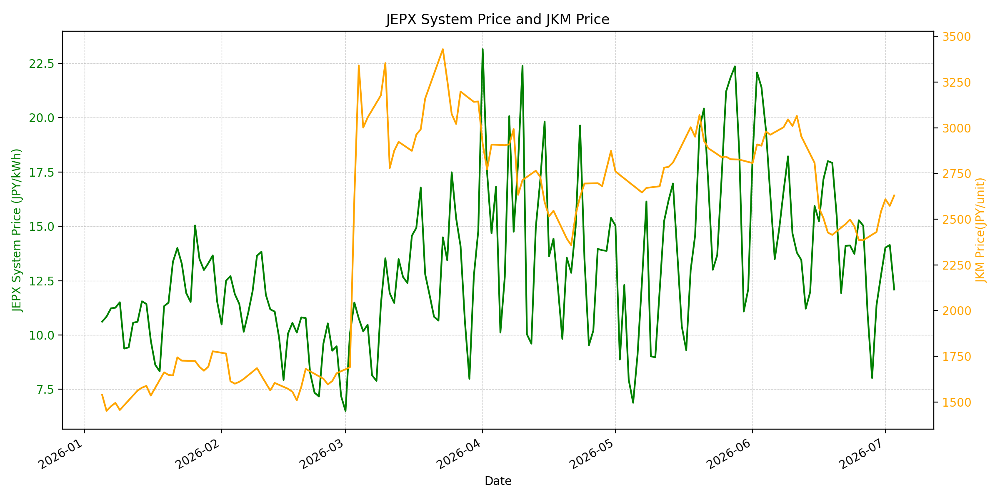
WTIの推移グラフ

JEPXシステムプライス
JEPXは受渡日ベースの最新非空値で評価しています。最新値は 2026-07-06 分です。先週終値は 2026-06-29 時点の直近値、先月終値は 2026-06-30 時点の直近値で評価しています。
| エリア | 当日価格 | 前日価格 | 前日比（％） | 先週終値 | 先週比（％） | 先月終値 | 先月比（％） | 過去最高値 | 最高値比（％） |
|---|---|---|---|---|---|---|---|---|---|
| システム | 13.48 | 10.05 | 34.13 | 11.37 | 18.56 | 12.73 | 5.89 | 64.06 | -78.96 |
| 北海道 | 13.21 | 10.02 | 31.84 | 13.96 | -5.37 | 10.21 | 29.38 | 73.92 | -82.13 |
| 東北 | 13.06 | 9.79 | 33.40 | 10.47 | 24.74 | 10.78 | 21.15 | 84.92 | -84.62 |
| 東京 | 15.56 | 14.61 | 6.50 | 15.38 | 1.17 | 16.23 | -4.13 | 86.13 | -81.93 |
| 中部 | 15.52 | 10.22 | 51.86 | 15.05 | 3.12 | 16.23 | -4.37 | 52.06 | -70.19 |
| 北陸 | 11.78 | 9.11 | 29.31 | 9.59 | 22.84 | 12.01 | -1.92 | 46.48 | -74.66 |
| 関西 | 11.78 | 9.05 | 30.17 | 9.51 | 23.87 | 12.00 | -1.83 | 46.48 | -74.66 |
| 中国 | 11.11 | 9.05 | 22.76 | 7.32 | 51.78 | 11.26 | -1.33 | 46.48 | -76.10 |
| 四国 | 9.32 | 9.05 | 2.98 | 5.91 | 57.70 | 7.72 | 20.73 | 46.48 | -79.95 |
| 九州 | 11.02 | 9.05 | 21.77 | 6.98 | 57.88 | 11.24 | -1.96 | 40.54 | -72.82 |
LNG先物価格
最新値は 2026-07-03 の LNG(close) です。先週終値は 2026-06-26 時点の直近値、先月終値は 2026-06-30 時点の直近値で評価しています。
| 当日価格 | 前日価格 | 前日比（％） | 先週終値 | 先週比（％） | 先月終値 | 先月比（％） | 過去最高値 | 最高値比（％） |
|---|---|---|---|---|---|---|---|---|
| 2630.00 | 2573.00 | 2.22 | 2385.00 | 10.27 | 2541.00 | 3.50 | 10319.00 | -74.51 |
石油先物価格
最新値は 2026-07-02 の OIL(close) です。先週終値は 2026-06-25 時点の直近値、先月終値は 2026-06-30 時点の直近値で評価しています。
| 当日価格 | 前日価格 | 前日比（％） | 先週終値 | 先週比（％） | 先月終値 | 先月比（％） | 過去最高値 | 最高値比（％） |
|---|---|---|---|---|---|---|---|---|
| 68.69 | 68.58 | 0.16 | 71.92 | -4.49 | 69.50 | -1.17 | 123.70 | -44.47 |
ニュース
イラン情勢に関するニュース
- 2026年7月5日、APは、イランの高官と故アリ・ハメネイ前最高指導者の息子らが葬儀に出席した一方、新最高指導者モジタバ・ハメネイ氏は姿を見せていないと報じました。米国との協議は葬儀終了まで停止しており、ホルムズ海峡、核問題、戦争終結が主要論点です。 参照: AP, 2026-07-05
- 2026年7月5日、Guardianは、ハメネイ前最高指導者の葬儀と並行して、イラン革命防衛隊がホルムズ海峡の支配回復を強めていると報じました。米イランの6月17日覚書は60日間の無通航料を含みますが、履行力は弱く、双方が軍事態勢を補強しています。 参照: Guardian, 2026-07-05
ホルムズ海峡経由の石油・LNGに関するニュース
- APは、米海軍が監督する多国籍海事機関が過去72時間でホルムズ海峡の70件の通航を支援し、7月4日だけで18件を支援したと報じました。オマーン側とイラン側のルートは安定しつつありますが、交通量は戦前水準を下回り、脅威水準はなお「substantial」です。 参照: AP, 2026-07-05
- Guardianは、少なくとも8隻がIRGCの直接警告を受けて反転し、7月2日の確認済み通航は38件で前日比10％減だったと報じました。イラン籍船の活動は増え、オマーン側ルートの利用は弱まっており、LNG・原油船の航路リスクは残っています。 参照: Guardian, 2026-07-05
ホルムズ海峡経由でない石油・LNGに関するニュース
- 2026年7月6日、APは、サウジアラビア、ロシア、イラク、クウェート、カザフスタン、アルジェリア、オマーンの7カ国が、8月に合計18.8万バレル/日の増産で合意したと報じました。OPEC+の増産は5カ月連続で、Brentは72ドル未満と戦前水準に近づいています。 参照: AP, 2026-07-06
- WSJは、原油の供給過剰がイランの交渉力を弱めており、油価は戦前水準へ低下、ホルムズ通航と湾岸生産の再開が進んでいると報じました。ただし、世界の在庫再積み増しには時間がかかるため、価格下落と在庫需要が併存しています。 参照: WSJ, 2026-07-06
日本国内のイラン戦争に関係するニュース
- 過去24時間で、JEPX制度、国内電力需給ルール、または日本政府の対イラン戦争関連対策を直接変更する主要な新規公表は確認できませんでした。
- 関連する国内材料として、経済産業省は2026年5月20日、2026年度夏季は全エリアで安定供給に最低限必要な予備率3％を確保できるため節電要請を実施しないと発表しています。一方で、国際情勢の変化、異常気象、火力発電所の集中はリスクとして明記されています。 参照: 経済産業省, 2026-05-20
インサイト
ニュース事項による日本の電力市場への影響（短期：数日〜1週間）
- JEPXシステムプライスは 13.48 円/kWhで前日比 34.13%、先週比 18.56% です。中部は 15.52 円/kWhで前日比 51.86%、東京も 15.56 円/kWhと高く、燃料相場が落ち着いても夏季需給で短期価格は反発しています。
- OILは 68.69 で前日比 0.16%、先週比 -4.49% と低位です。OPEC+増産と供給過剰観測は燃料費の上値を抑えますが、ホルムズの通航量は戦前未満で、警告や機雷調査が続くためリスクプレミアムは残ります。
- LNGは 2630.00 で前日比 2.22%、先週比 10.27% と上昇しました。APとGuardianの通航リスク報道を踏まえると、数日〜1週間では原油安よりもLNG船・保険・地域需給の不確実性が電力価格を下支えしやすいです。
ニュース事項による日本の電力市場への影響（長期：1ヶ月〜半年）
- OPEC+の5カ月連続増産、湾岸生産再開、WSJが報じる供給過剰が続けば、OILは過去最高値比 -44.47%、LNGは -74.51% と低位にとどまり、日本の火力燃料費は中期的に抑制されやすいです。
- 一方で、Guardianが指摘する通航料・航路管理の対立は1ヶ月〜半年の尾を引くリスクです。60日間の猶予後にイランが管理権を強めれば、LNG・原油の船腹、保険、迂回コストが再上昇し、JEPXの燃料費連動部分を押し上げます。
- 国内では節電要請なしの前提ですが、システム価格は先月比 5.89%、北海道は 29.38%、東北は 21.15% 上昇しています。燃料相場の改善だけでなく、夏季ピーク、火力稼働、地域間連系の制約を合わせて見ないと、長期の価格低下は限定的になる可能性があります。